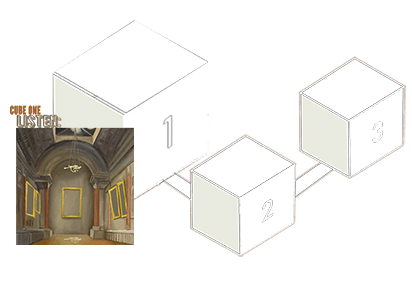
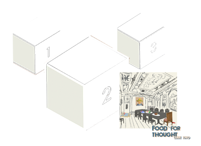
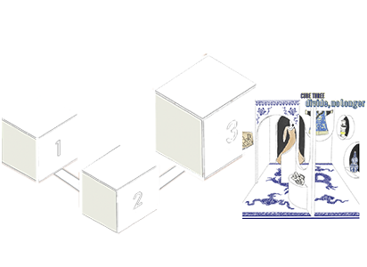

ABOUT THE MET
The Metropolitan Museum of Art presents over 5,000 years of art from around the world for everyone to experience and enjoy. The Museum lives in two iconic sites in New York City—The Met Fifth Avenue and The Met Cloisters. Millions of people also take part in The Met experience online. Since its founding in 1870, The Met has always aspired to be more than a treasury of rare and beautiful objects. Every day, art comes alive in the Museum's galleries and through its exhibitions and events, revealing new ideas and unexpected connections across time and across cultures.
ABOUT THE NATIONAL PALACE MUSEUM
The National Palace Museum, is a museum in Taipei, Taiwan. It has a permanent collection of nearly 700,000 pieces of Chinese artifacts and artworks, many of which were moved from the Palace Museum in the Forbidden City in Beijing, as well as five other institutions throughout mainland China during the ROC retreat. These collections had been transferred to several locations before finally being established in 1965 at its present location in Shilin, Taipei. The museum building itself was built between March 1964 and August 1965, with many subsequent expansions making it one of the largest of its type in the world. There is also a Southern Branch in Taibao, Chiayi which opened in 2015.
EXHIBITION CURATORIAL STATMENT
East meets West; tradition meets modernity. While such disparate entities coexist in our world, museums strived to isolate their comprehensive collections of artifacts into disparate spaces. Renaissance paintings solely belong in grand spacious galleries; Monet’s Impressionist paintings must be hung with its “own kind”; marble statues of the Greek Gods have never been seen with those of Buddha. The established method of arrangement (in museums) has served to satisfy our preference for harmonious and complementary images. Yet, it has compensated for a much greater issue of colonization: a biased recognition of the Euro-American category of ‘Art’ as commodities to be collected and displayed.
The task of decolonizing museums, therefore, should prioritize an inclusion of diverse and underrepresented cultures, a more balanced spotlight on non-Euro-American/Eurocentric art, and an emphasis on art materiality. How would art from distinct cultures and eras integrate into one another? And how do audiences interact with these relationships? The collaborative exhibition between the Metropolitan Museum in New York and the National Palace Museum in Taipei takes you, the viewer, on a search for these answers.
The exhibition comprises three cubed spaces (left) that function similarly to conventional museum galleries. However, these "Cubes" are confined spaces disconnected from one another; for the first time, viewers are confronted with closed walls without one gallery "room" leading up to the next. Regardless of their position in these cubed rooms, viewers are faced with artifacts all around. This would prompt an immediate response at attempting to understand their reaction, whether that is a sense of discomfort, overwhelm, fascination, or a combination of all.
- Cube One: Listen
- Cube Two: Food for Thought
- Cube Three: Division, No Longer
In each gallery (cube), the audience would find overlaps of juxtaposing themes (for example, the contrast of Eastern artifacts from the NPM’s collection and Western artifacts from the MET’s collection, or vice versa) and unorthodox selections of artifacts existing in the same space.
We sit at a crossroad where cultures from the East bridges with the West, where tradition and history meets the revolutionizing energy of modernity. The collaborative exhibition between the MET and the National Palace Museum serves as a living point of connection for this crossroad.
- EXPLORE THE GALLERIES -
CUBE ONE
The first exhibition space, Cube One, aims to confront viewers with juxtaposing images between Chinese Art and Eurocentric Art/art display.
CUBE TWO
Cube Two mimics the display of lavish living rooms we see in museums. In this exhibition, the audience will be allowed to enter the room and observe each artifact.
CUBE THREE
Covering roughly half of Cube three, the blue china pattern (on walls and tiles) juxtaposes traditional Chinese element to a modern Westernized layout.